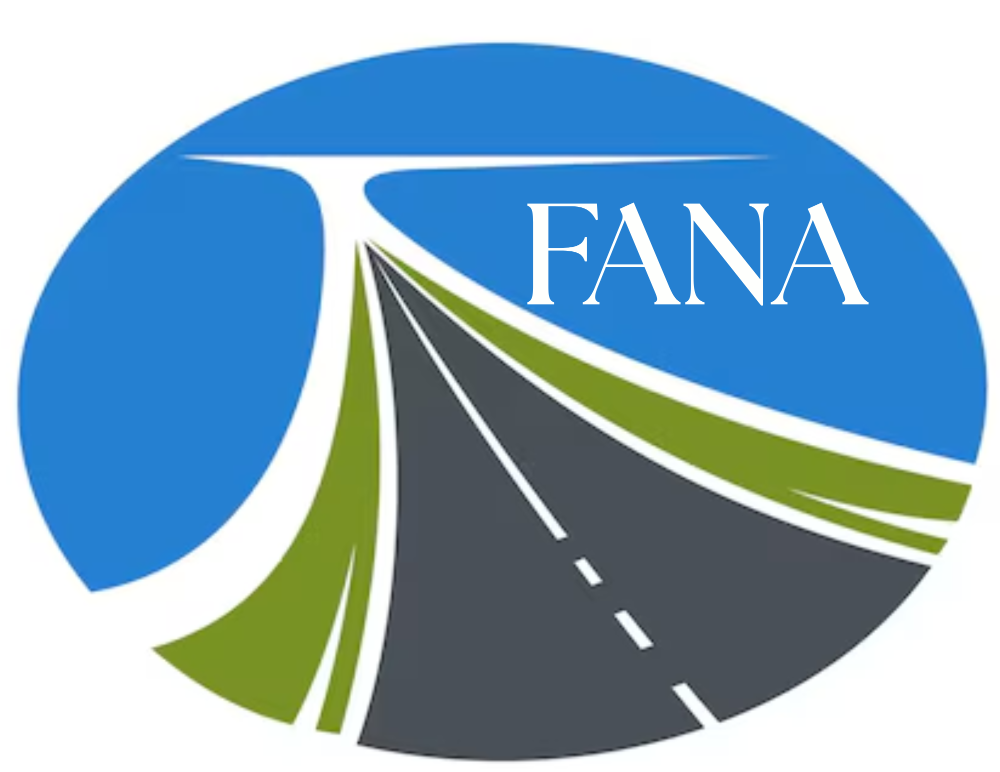

Ingeniería & Carreteras
Última actualización: 7-Oct-2025
En FANA, valoramos su privacidad y nos comprometemos a proteger los datos personales que usted nos proporcione. Esta Política de Privacidad explica cómo recopilamos, usamos y protegemos su información cuando visita nuestro sitio web [URL del sitio], dedicado a brindar información y servicios relacionados con drenajes de carreteras y obras de infraestructura vial.
Podemos recopilar los siguientes tipos de información:
La información recopilada se utiliza para los siguientes fines:
Implementamos medidas técnicas, administrativas y de seguridad razonables para proteger sus datos personales contra acceso no autorizado, pérdida, alteración o divulgación indebida.
Sin embargo, recuerde que ningún sistema es completamente seguro, y el uso de Internet implica ciertos riesgos.
No compartimos, vendemos ni alquilamos sus datos personales a terceros.
Solo se podrá compartir información en los siguientes casos:
Nuestro sitio puede contener enlaces a otras páginas o recursos relacionados con obras civiles o carreteras. No somos responsables por las prácticas de privacidad ni el contenido de esos sitios externos.
Usted tiene derecho a:
FANA ya no está en operación. Este sitio se conserva como muestra y no tiene formularios, así que no recopila ni guarda datos personales.
Podemos actualizar esta Política de Privacidad periódicamente. Cualquier cambio será publicado en esta misma página con la fecha de actualización correspondiente.
Como FANA ya no está en operación, no hay un canal de contacto activo. Este sitio no recopila datos personales.